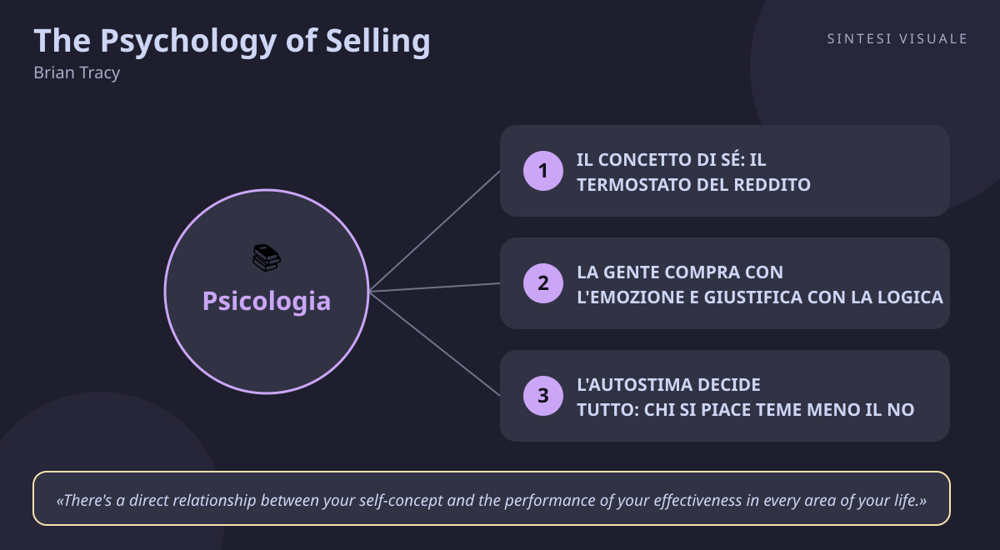

Home / Libri / The Psychology of Selling

The Psychology of Selling
Brian Tracy · Vendite
«The Psychology of Selling»
- Termostato del reddito
- Compra l'emozione
- Autostima e no
- Vendi da amico
🧭Introduzione
- L'autore: Brian Tracy (1944), canadese naturalizzato americano, è uno dei formatori di vendita più ascoltati al mondo. La sua storia è la sua credenziale: operaio e bracciante senza diploma, diventò venditore scarso che non chiudeva nulla, poi studiò ossessivamente i migliori venditori, divenne top salesman e infine consulente che ha formato centinaia di migliaia di venditori in decine di paesi. Ha scritto oltre 90 libri tradotti in decine di lingue.
- Il libro: nasce dal leggendario programma audio omonimo (il più venduto della storia della formazione commerciale), diventato libro nel 2004 (Thomas Nelson; riedizione HarperCollins Leadership 2006) col sottotitolo How to Sell More, Easier, and Faster Than You Ever Thought Possible. In Italia circola in edizione inglese col titolo originale.
- Perché conta oggi: perché sposta il baricentro della vendita dalla tecnica alla testa: capire la psicologia della vendita conta più delle tecniche di vendita. Vale per chi vende davvero, ma anche per chiunque debba "vendere" un'idea: a un capo, a un cliente, a un figlio.
- A chi è utile: venditori, agenti, freelance, imprenditori — e chiunque voglia capire perché la gente dice sì o no.
📘Riassunto
- La scintilla centrale: i risultati di vendita non dipendono dal talento né dalla fortuna, ma da causa ed effetto: lavori sul tuo interno (convinzioni, autostima, obiettivi) e l'esterno — i numeri — segue.
- La struttura (8 blocchi): (1) il gioco interiore della vendita — concetto di sé e autostima; (2) fissare e raggiungere tutti gli obiettivi di vendita; (3) perché la gente compra — i moventi emotivi; (4) la vendita creativa — differenziarsi; (5) ottenere più appuntamenti — il prospecting; (6) il potere della suggestione — come presentarsi e presentare; (7) concludere la vendita — gestire resistenze e chiudere; (8) le 10 chiavi del successo nella vendita.
- Il punto di svolta: il capitolo sul concetto di sé, dove Tracy mostra che ogni venditore ha un "termostato del reddito" inconscio: puoi imparare tutte le tecniche del mondo, ma finché non alzi l'immagine che hai di te stesso, i tuoi risultati torneranno sempre allo stesso livello. Il limite non è il mercato: sei tu.
- L'eredità oggi: è il ponte tra crescita personale e vendita — l'antenato di tutto il filone "mindset del venditore". L'idea che il no vada gestito dentro di sé prima che fuori ha cambiato la formazione commerciale moderna.
💡Concetti chiave
- Il tuo concetto di sé è un termostato del reddito: non guadagnerai mai stabilmente più di quanto credi di valere.
- La gente compra con l'emozione e giustifica con la logica: vendi il perché, non il cosa.
- Quanto ti piaci decide quanto vendi: l'autostima è l'antidoto alla paura del rifiuto.
- Ogni vendita di successo si basa su un fattore solo: l'amicizia.
- Obiettivi scritti, misurabili e con scadenza: ciò che non è scritto resta un desiderio.
- Prospetta senza sosta e chiedi più volte: la maggior parte delle vendite si chiude dopo il quinto tentativo.
📖1. Il concetto di sé: il termostato del reddito
- Definizione il concetto di sé è il "programma principale" del tuo inconscio: l'insieme di ciò che credi di te. Tracy sostiene che agisci sempre all'esterno in modo coerente con ciò che pensi all'interno, e che esiste un livello di reddito con cui ti identifichi: se ti vedi come venditore da 50.000 euro l'anno, pensieri e comportamenti ti riporteranno lì, anche dopo un mese record.
- Esempio un agente fa un trimestre eccezionale a gennaio, poi "misteriosamente" rallenta, rimanda le chiamate, si ammala prima delle trattative grosse: l'inconscio sta sabotando il surplus per tornare al livello noto e confortevole.
- Come applicarlo riscrivi il programma con affermazioni quotidiane ("mi piaccio", "sono un venditore da X"), visualizza te stesso al nuovo livello di reddito ogni mattina, frequenta venditori che guadagnano quanto vuoi guadagnare tu.
- Errore comune credere che basti lavorare di più: se il termostato è basso, più fatica produce solo più stanchezza, non più soldi.
- Collegamento la profezia che si autoavvera di Merton e il "pavimento e soffitto" identitario di Atomic Habits (Clear): prima cambi chi credi di essere, poi cambia ciò che fai.
📖2. La gente compra con l'emozione e giustifica con la logica
- Definizione ogni decisione d'acquisto è al 100% emotiva — desiderio di guadagno, paura di perdere, bisogno di sicurezza, di prestigio, di appartenenza — e solo dopo viene giustificata con ragioni logiche (prezzo, scheda tecnica, confronto). La logica fa vendere, ma è l'emozione a far decidere.
- Esempio nessuno compra un'auto da 60.000 euro per i cavalli fiscali: la compra per come si sentirà al semaforo, e poi racconta a sé stesso (e alla moglie) che "consuma poco e tiene il valore".
- Come applicarlo prima di ogni trattativa chiediti "quale emozione profonda sta comprando questa persona?" e fai domande che la portino a galla ("cosa cambierebbe per lei se questo problema sparisse?"); presenta i fatti solo come conferma della scelta emotiva.
- Errore comune sommergere il cliente di caratteristiche tecniche convinti che "i numeri convincano": i numeri rassicurano, non muovono.
- Collegamento il Sistema 1 e Sistema 2 di Kahneman (Pensieri lenti e veloci) e il "partire dal perché" di Simon Sinek: la gente non compra cosa fai, compra perché lo fai.
📖3. L'autostima decide tutto: chi si piace teme meno il no
- Definizione per Tracy il gradimento di sé è il fattore che più determina la performance in ogni campo: più ti piaci, meno temi il rifiuto; meno temi il rifiuto, più tentativi fai; più tentativi fai, più vendi. Il venditore superiore ha alta autostima, si assume il 100% della responsabilità dei risultati e non scarica mai la colpa sul mercato, sul prodotto o sul capo.
- Esempio due venditori ricevono lo stesso "no" secco al telefono: quello con bassa autostima lo vive come giudizio personale e smette di chiamare per un'ora; quello con alta autostima lo archivia come statistica e compone il numero successivo.
- Come applicarlo ripeti ogni giorno "mi piaccio!" (sembra ingenuo, riprogramma davvero il dialogo interno), celebra ogni tentativo e non solo ogni chiusura, tieni un diario dei piccoli successi da rileggere nei giorni neri.
- Errore comune aspettare di sentirsi sicuri per agire: funziona al contrario — è agire nonostante la paura che costruisce la sicurezza.
- Collegamento il mindset di crescita di Carol Dweck (il fallimento come informazione, non identità) e l'autoefficacia di Bandura: la fiducia è un muscolo, non un dono.
📖4. Ogni vendita di successo si basa sull'amicizia
- Definizione nessuno compra finché non è sinceramente convinto che tu sia suo amico e stia agendo nel suo interesse. La fiducia precede la transazione: il cliente deve percepirti come consigliere, non come cacciatore di commissioni. L'empatia vera — non vendere mai ciò che non è bene per il cliente — è una strategia, prima ancora che un'etica.
- Esempio il meccanico che ti dice "questa riparazione da 800 euro non ti serve, basta un pezzo da 80" perde 720 euro oggi e guadagna te (e i tuoi amici) per i prossimi dieci anni.
- Come applicarlo in ogni incontro fai prima domande sulla persona e sui suoi problemi che sul tuo prodotto; se capisci che la tua offerta non è adatta, dillo apertamente e indirizza altrove: la reputazione così costruita vende da sola.
- Errore comune confondere amicizia con simpatia melensa o, peggio, fingere interesse per manipolare: la gente fiuta l'insincerità meglio di qualsiasi tecnica.
- Collegamento il principio della simpatia di Cialdini (Le armi della persuasione) e la regola d'oro di Carnegie (Come trattare gli altri e farseli amici): interessati sinceramente agli altri.
📖5. Obiettivi scritti, misurabili e con scadenza
- Definizione Tracy dedica un intero blocco agli obiettivi perché i top venditori — a differenza della media — scrivono i propri traguardi, li rendono numerici, gli danno una data e li rileggono ogni giorno. Un obiettivo non scritto è solo un desiderio; uno scritto diventa un impegno che l'inconscio inizia a elaborare.
- Esempio "voglio vendere di più" non muove nulla; "chiudo 8 contratti da almeno 5.000 euro entro il 31 dicembre, con 15 telefonate al giorno" organizza da solo le tue mattine.
- Come applicarlo scrivi 10 obiettivi per l'anno, scegline il più importante, scomponilo in target mensili e settimanali, traducili in attività giornaliere numerate (chiamate, visite, preventivi) e spunta ogni sera.
- Errore comune fissare obiettivi vaghi o solo di risultato ("fatturato +20%") senza obiettivi di attività: il risultato non lo controlli, le telefonate di oggi sì.
- Collegamento gli obiettivi SMART di Doran e la regola di Covey (Le 7 regole per avere successo): comincia avendo la fine in mente.
📖6. Prospetta senza sosta e chiedi la chiusura più volte
- Definizione due dati brutali reggono il mestiere: il flusso di nuovi potenziali clienti decide il tuo futuro più di qualsiasi tecnica, e la maggior parte delle vendite si chiude solo dopo ripetute richieste — Tracy cita la statistica classica secondo cui l'80% delle vendite si chiude dopo il quinto tentativo, mentre solo una minoranza dei venditori arriva a chiedere cinque volte. Chi smette di cercare clienti e chi chiede una volta sola si condanna alla media.
- Esempio il consulente che dedica il lunedì mattina solo a richiamare preventivi "dormienti" e vecchi contatti scopre che il 30% era semplicemente in attesa di essere richiamato: non serviva convincerli, serviva ripresentarsi.
- Come applicarlo blocca ogni giorno una fascia intoccabile per il prospecting (chiamate, messaggi, richieste di referral), non lasciare mai un incontro senza fissare il passo successivo, e preparati 3-4 modi diversi di chiedere la chiusura da usare in sequenza.
- Errore comune interpretare il primo "ci penso" come un no definitivo — e regalare così il cliente al concorrente che richiamerà dopo di te.
- Collegamento le domande Implicazione ed Esigenza di Rackham (SPIN Selling), che preparano il terreno perché la richiesta finale cada su un bisogno già esplicito, e la perseveranza celebrata da Duckworth in Grit.
💬Citazioni da ricordare
"There's a direct relationship between your self-concept and the performance of your effectiveness in every area of your life." — Conta perché è la legge madre di tutto il libro: cambi l'immagine interna, cambiano i risultati esterni, in ogni campo, non solo nelle vendite.
"A person will not buy from you until they are genuinely convinced that you are their friend and acting in their best interest." — Conta perché rovescia il mestiere: smetti di chiederti "come lo convinco?" e inizia a chiederti "come gli sono davvero utile?".
"If you do what other successful people do, over and over again, nothing can stop you from eventually getting the same results." — Conta perché demolisce la scusa del talento: il successo è un metodo replicabile, non un dono.
🌍Esempi di oggi
- Il preventivo ignorato che aspettava solo una telefonata: invii un preventivo e non ricevi risposta; invece di archiviarlo come perso, richiami dopo una settimana con una domanda utile ("ha avuto modo di confrontarlo col budget?"). Spesso il cliente compra proprio da te — non per il prezzo, ma perché sei l'unico che si è fatto vivo (concetti 4 e 6).
- Il colloquio dove vinci senza parlare di te: a un colloquio di lavoro passi i primi minuti a fare domande genuine sul team e sui problemi aperti, invece di elencare il curriculum. Il selezionatore ti percepisce come alleato, non come venditore di te stesso, e la logica del CV arriva dopo l'emozione della fiducia (concetti 2 e 4).
- La palestra rimandata come il termostato basso: ogni gennaio ti iscrivi in palestra e a marzo hai smesso: non è pigrizia, è concetto di sé ("io non sono una persona sportiva") che ti riporta al livello noto. Riscrivere l'identità ("sono uno che si allena tre volte a settimana") funziona più di qualsiasi scheda (concetto 1).
🛠️Azioni pratiche
- Scrivi i tuoi 10 obiettivi annuali di vendita o di lavoro, scegline uno, scomponilo in un numero esatto di azioni giornaliere e inizia domani mattina dalla prima.
- Per una settimana, prima di ogni chiamata o riunione, annota su un foglio quale emozione profonda sta comprando il tuo interlocutore — e verifica quante conversazioni cambiano tono.
- Richiama tre contatti "dormienti" (preventivi fermi, vecchi clienti, lead fredde) con una domanda utile e senza pressioni: conta quanti si riattivano.
💎Da portare a casa
Non puoi guadagnare fuori ciò che non hai già costruito dentro: alza il concetto di te, e le vendite seguiranno.
Vuoi scavare più a fondo? Rispondi in chat con il numero del concetto (1–6) che vuoi espandere — termostato del reddito, acquisto emotivo, autostima, amicizia, obiettivi o prospecting — oppure fai una domanda su vendite, persuasione, negoziazione, stress, emozioni o carriera, e la approfondiamo insieme.
🖼️In un colpo d’occhio

Tocca l’immagine per ingrandirla.